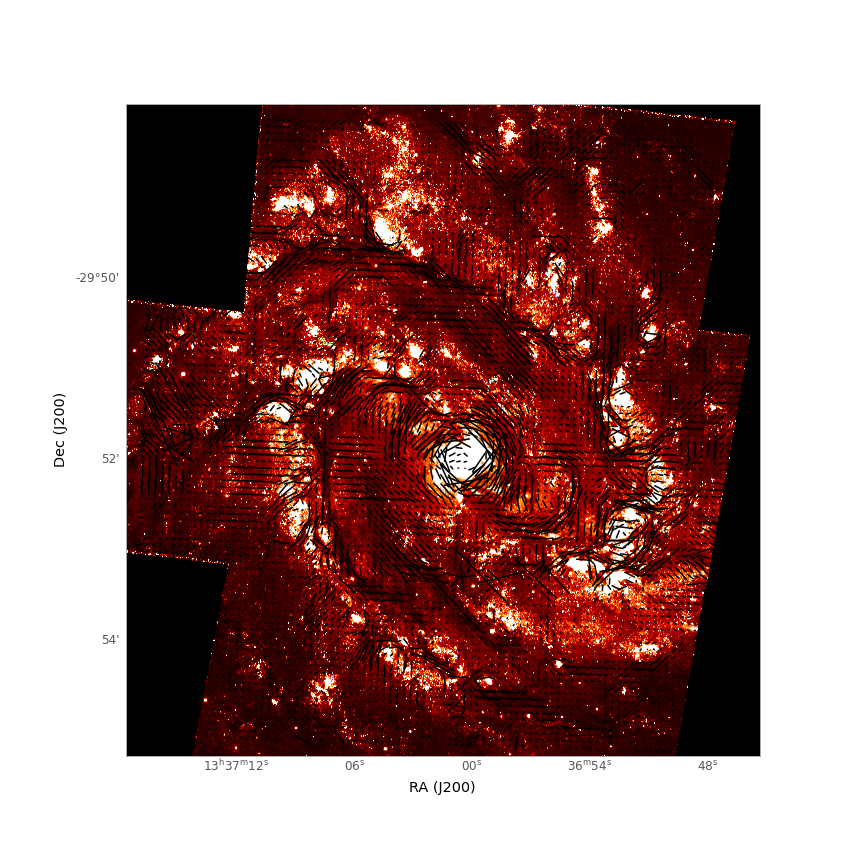

About Me
Hi! I am Divya Mishra, a 2nd year graduate student at Texas A&M University. I am studying optical polarization in a nearby spiral galaxy, the M83. I am also working on the spectroscopic analysis of SN 2022hrs. In my free time, I enjoy painting, exploring different genres of music, and watching movies and series. Singing and reading are therapeutic for me. I also love experimenting with new recipes.
Research
Imaging Polarimetry of M83 Galaxy
My current research focuses on mapping magnetic fields in external galaxies using optical imaging polarimetry. There are two main mechanisms that cause optical polarization in galaxies:
scattering and dichroic extinction. Dust scattering in galaxies while observing pole-on produces polarization vectors that appear to be oriented tangentially around the galaxy's center,
forming a centrosymmetric pattern. In contrast, when observing a galaxy at higher inclinations (edge-on), the dust scattering occurs predominantly
in the direction perpendicular to the galaxy's disk. As a result, the scattered light tends to be polarized parallel to the galaxy's disk.
In dichroic extinction, the light gets preferentially absorbed or attenuated by the dust grains that align themselves along the magnetic field of the galaxy as the result of Davis-Greenstein effect.
The dust grains align such that their long axis is perpendicular to the field. As light traverses these aligned grains,
the electric field component parallel to the elongated axis gets absorbed yielding a net polarization parallel to the magnetic field. Our polarization maps
suggest that optical polarization is mostly dominated by dichroic extinction. The data is obtained by ESO's Very Large Telescope (VLT). Because of the high resolution of VLT, we
can get detailed structure of polarization within the galaxy which is rather difficult to obtain by radio telescopes due to their limited resolution.

Optical polarization map of M83 galaxy overlayed on the image of M83 obtained by HST in the F336W filter.
Spectropolarimetry of Type Ia Supernova
Another aspect of my research is to understand the explosion mechanism and progenitors of
Type Ia Supernovae (SNe Ia). SNe Ia has crucial applications in tracing the expansion history of the universe. However, the diversity of their
progenitors and explosion mechanisms are not well understood, leading to systematic biases. We aim to use spectropolarimetry, which is a technique that
exploits the polarization properties of light emitted by supernovae across various wavelengths and enables us to discern the overall shape of the emitting region.
This overall geometry helps us differentiate between different models of SNe Ia, giving better constraints on the progenitors system and explosion mechanism.
Spectral Analysis of High-Velocity Type Ia Supernova Ongoing...Will update soon!
Publications:
Contact
Email:dimi_24@tamu.edu